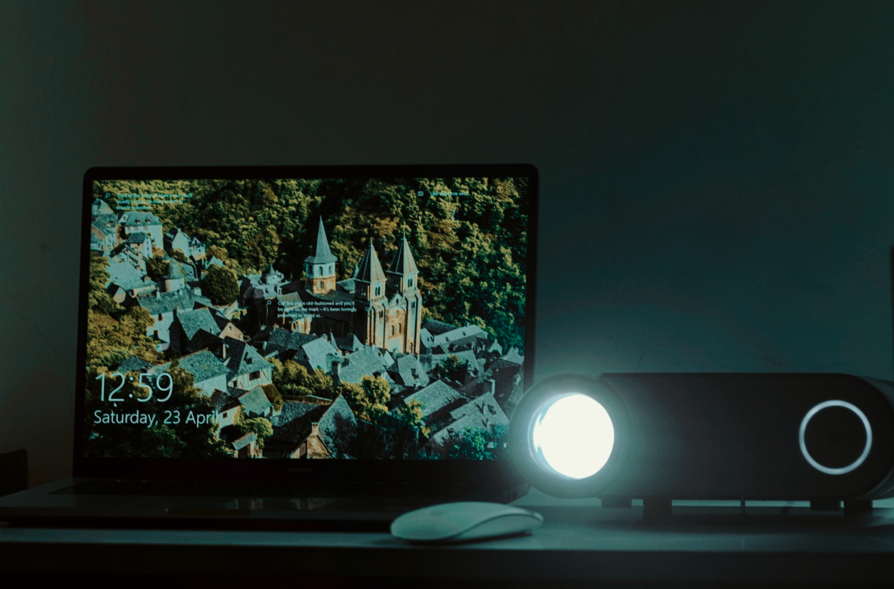
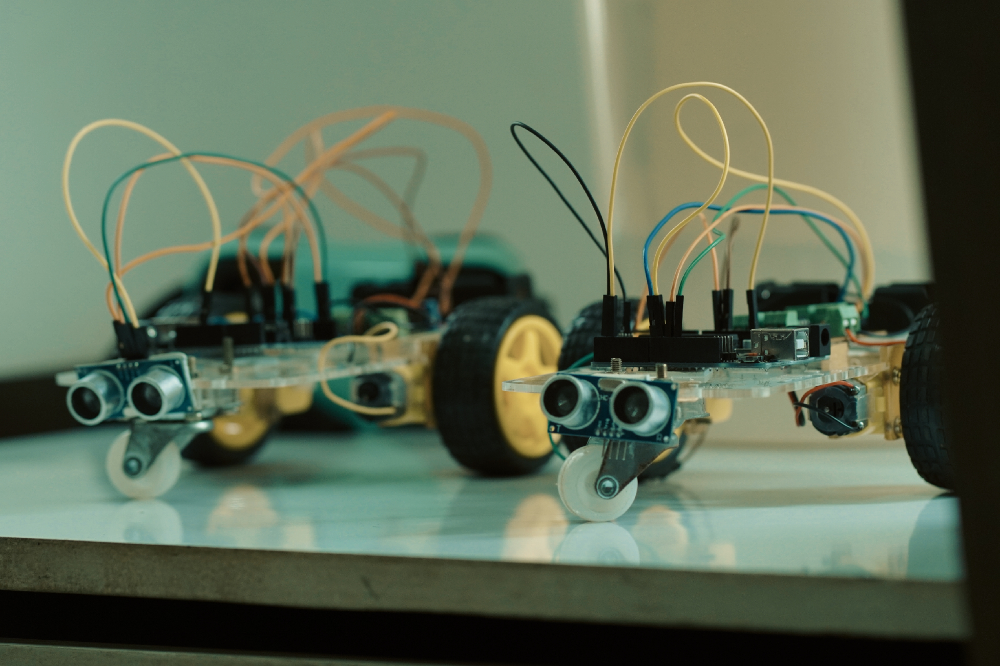

IEDC
@Ssc Areekode
The IEDC Club here @Sullamussalam is dedicated to its pursuit of boosting the innovative culture among its students. We strive to bridge the gap between concepts and services by letting students take complete control of the activities that we do here. Because it's driven by the students the club stays active and motivated all year round with tech-talks, seminars, bootcamps, idea-contests and workshops
Visit Ssc Areekode